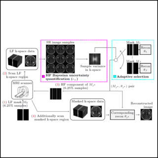
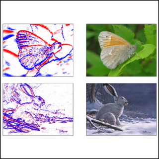
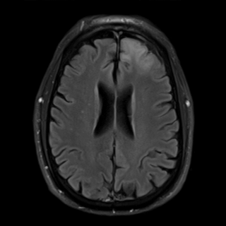

|
Jaehyeok Bae Hello! I am a second-year Ph.D. student in the Department of Electrical Engineering at Stanford University. I look forward to collaborate with professionals in the global research community, including both academia and industry. I received my Bachelor's science (Summa Cum Laude) in Electrical and Computer Engineering at Seoul National University, where I was supported by Presidential Science Scholarship. Previously, I spent spent some time at Gauss Labs as a computer vision applied scientist intern. Email / CV / Google Scholar / LinkedIn / Github |

|
ResearchI'm interested in computer vision, machine learning, image processing, along with biomedical imaging. Specifically, my goal is to develop CV/ML applications for medical and industrial domains, alongside future medical devices, thereby significantly contributing to patient care, diagnosis, and treatment. * denotes equal contribution. |
|  |
Adaptive Selection of Sampling-Reconstruction in Fourier Compressed Sensing
Seongmin Hong, Jaehyeok Bae, Jongho Lee, Se Young Chun ECCV, 2024 paper / github - Proposed a novel adaptive selection of sampling-reconstruction framework that selects the best sampling mask and reconstruction network for each input data in Fourier Compressed Sensing. |

|
PNI : Industrial anomaly detection using position and neighborhood information
Jaehyeok Bae*, Jaehan Lee*, Seyun Kim ICCV, 2023 paper / video / poster / github - Proposed a novel anomaly detection and localization alogrithm for industrial datasets, by training a normal feature distribution using position and neighborhood information of local features. |
|  |
N-ImageNet: Towards robust, fine-grained object recognition with event cameras
Junho Kim, Jaehyeok Bae, Gangin Park, Dongsu Zhang, Youngmin Kim ICCV, 2021 paper / video / github - Introduced N-ImageNet, a large-scale dataset targeted for robust, fine-grained object recognition with event cameras. - Empirically showed that pretraining on N-ImageNet improves the performance of event-based classifiers. |

|
Design of a perforated panel for transmission noise reduction
Younghyo Park, Jaehyeok Bae, Jin Woo Lee KSME, A, Vol. 39, No. 4, 2015 paper (in Korean) - Proposed a design method for a perforated panel to reduce the level of incident noise without obstructing the flow of incoming fluid. (written in Korean) |
Project |
|  |
SNU FastMRI Challenge
Jaehyeok Bae, Sungkyung Kim Electrical and Computer Engineering, Seoul National University, 2022~2023 homepage / ppt / video (in Korean) / github - Proposed an algorithm to restore aliased images from accelerated MRI scans into aliasing-free images, 2nd place award in the 2022 competiton. - Served as the contest coordinator for the 2023 competition, evaluating and analyzing the participants' models. |
|
Check out Jon Barron's repository for the template of this website. |